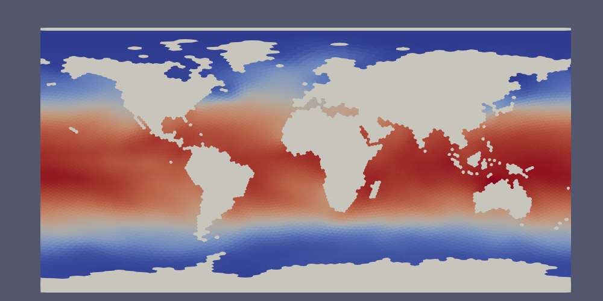
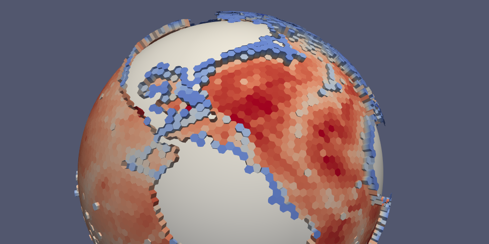
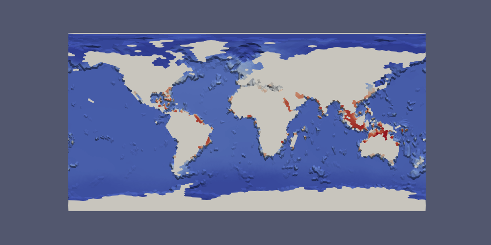

Visualization¶
MPAS-Tools has kind of a hodge-podge of unrelated visualization tools. This is largely because MPAS-Tools is conceived of primarily as a repository for tools for manipulating MPAS meshes during their construction and initialization.
ParaView VTK Extractor¶
Data on MPAS meshes can be viewed directly in ParaView. However, those of us who work with output from MPAS components on a regular basis have found that the built-in capability has a number of significant limitations. These include:
ParaView visualizes data on MPAS cell centers by connecting them to form triangles. The data is linearly interpolated within each triangle and geometry associated with the parts of MPAS cells that are adjacent to boundaries (e.g. land in the ocean and sea-ice components) are not visualized.
MPAS output may not contain the mesh information needed by ParaView. This is typical of monthly output files, which do not include the mesh data for more efficient file storage.
MPAS output files may contain significantly more data that is desired for visualization. The data may contain full 3D fields, whereas a few slices at different depths may suffice for visualization. There may also be many more variables in the output than are of interest. This may be a problem if the datasets are quite large and therefore prohibitive to transfer to another machine where visualization may be more practical.
For these reasons and more, we created a Python tool for extracting data on
MPAS meshes in files in VTK format that can be read in by
ParaView. The VTK files provide the data as “cell”, rather than “point” data in
ParaVeiw, meaning each cell has the correct polygonal geometry and will be
visualized with a single, constant value for a given field. The extractor,
which is available either through the
mpas_tools.viz.paraview_extractor.extract_vtk() function or the
paraview_vtk_field_extractor.py command-line interface, can also be used to
visualize data on MPAS vertices (visualized on triangles) and edges (visualized
on quadrilaterals).
The extractor also allows the user to select a subset of the indices along
dimensions other than Time, nCells, nVertices and nEdges. This
can be useful for selecting, for example, only the top layer of a 3D field.
This capability can also be used to ignore fields with a given dimension by
selecting no indices along that dimension.
By default, time-independent fields on cells are written to a file
vtk_files/staticFieldsOnCells.vtp
and time-dependent fields on cells are written to a series of files
vtk_files/timeDependentFieldsOnCells.pvd
vtk_files/time_series/timeDependentFieldsOnCells.0.vtp
vtk_files/time_series/timeDependentFieldsOnCells.1.vtp
...
and similarly for edges and vertices. Time-independent fields can be
included in each time step of the time-dependent fields for with
combine=True. This allows time-dependent and -independent fields
to be combined in filters within Paraview at the expense of considerable
additional storage space.
Since the extractor is fairly complex with a lot of possible use cases, we will describe its functionality in several examples.
Extracting a Temperature Time-series¶
To extract fields across multiple files, passing in a regular expression
for the filename pattern, for example
filename_pattern="hist.mpaso.timeSeriesStatsMonthly.*.nc". Since the mesh
data is often excluded from time series output, you may need to supply a
different file with mesh information, such as an initial condition or a restart
file: mesh_filename='mpaso.rst.0001-02-01_00000.nc'.
In the following example, we extract the temperature field from a time series of daily output from the MPAS-Ocean model:
from mpas_tools.viz.paraview_extractor import extract_vtk
extract_vtk(
filename_pattern='analysis_members/mpaso.hist.am.timeSeriesStatsDaily.*.nc',
variable_list='timeDaily_avg_activeTracers_temperature',
dimension_list=['nVertLevels=0'], mesh_filename='init.nc',
out_dir='vtk_files', xtime='xtime_startDaily')
The top index (nVertLevels=0) is extracted from the temperature time series.
The output directory is 'vtk_files'. MPAS output typically includes time
information in string format in a variable called xtime. In this instance,
we have time-averaged data and the output instead includes a start time
xtime_startDaily that we need to supply instead. (We could also supply the
end time xtime_endDaily if that were preferred for some reason.)
The result is:
vtk_files/fieldsOnCells.pvd
vtk_files/time_series/fieldsOnCells.0.vtp
...
These files can be opened in ParaView with:
$ paraview vtk_files/fieldsOnCells.pvd
This will open all of the files in the vtk_files/time_series directory as
they are requested within ParaView. See ParaView Macros for some tips
on filling in the continents and displaying the current date in ParaView.
The same extraction could be accomplished with the command-line tool as follows:
$ paraview_vtk_field_extractor.py \
-f "analysis_members/mpaso.hist.am.timeSeriesStatsDaily.*.nc" \
-v timeDaily_avg_activeTracers_temperature -d nVertLevels=0 \
-m init.nc -o vtk_files --xtime=xtime_startDaily
Extracting Multiple Fields¶
In this next example, we will extract areaCell in addition to temperature.
First, we will extract it into a separate VTK file for time-independent
variables, then we will demonstrate combining it with the time-dependent data.
In the first instance, we add areaCell to the variable_list and
explicitly include combine=False, the default, to indicate that we want to
keep time-independent and time-dependent variables separate:
from mpas_tools.viz.paraview_extractor import extract_vtk
extract_vtk(
filename_pattern='analysis_members/mpaso.hist.am.timeSeriesStatsDaily.*.nc',
variable_list=['timeDaily_avg_activeTracers_temperature', 'areaCell'],
dimension_list=['nVertLevels=0'], mesh_filename='init.nc',
combine=False, out_dir='vtk_files2', xtime='xtime_startDaily')
The result is:
vtk_files2/staticFieldsOnCells.vtp
vtk_files2/timeDependentFieldsOnCells.pvd
vtk_files2/time_series/timeDependentFieldsOnCells.0.vtp
...
We can open both vtk_files/staticFieldsOnCells.vtp and
vtk_files/timeDependentFieldsOnCells.pvd in the same ParaVeiw sesson and
plot them as we like. But we cannot perform calculations involving both
temperature and cell area very easily. If this were a necessity, it might be
convenient to combine them into the same files:
from mpas_tools.viz.paraview_extractor import extract_vtk
extract_vtk(
filename_pattern='analysis_members/mpaso.hist.am.timeSeriesStatsDaily.*.nc',
variable_list=['timeDaily_avg_activeTracers_temperature', 'areaCell'],
dimension_list=['nVertLevels=0'], mesh_filename='init.nc',
combine=True, out_dir='vtk_files3', xtime='xtime_startDaily')
Now, the result is that areaCell is included in the time-series files
vtk_files3/fieldsOnCells.pvd
vtk_files3/time_series/fieldsOnCells.0.vtp
...
Extracting “All” Fields¶
Sometimes, you want all of the fields from your input files to be extracted.
For this purpose there is a special “variable” called 'all' that gets
translated into the full list of available variables. More often, you want to
extract all the variables on cells, edges or vertices, so there are special
“variables” for this, too: 'allOnCells', 'allOnEdges', and
'allOnVertices'. By default, only variables from the files found by
filename_pattern are expanded by these special variables. If you also want
to include variables from the mesh file, you need to specify
include_mesh_vars=True.
The following example extracts all the variables on cells for both the
time-series and the mesh data. It specifies maxEdges= so that variables
(such as edgesOnCell and cellsOnCell) that include this dimension are
excluded:
from mpas_tools.viz.paraview_extractor import extract_vtk
extract_vtk(
filename_pattern='analysis_members/mpaso.hist.am.timeSeriesStatsDaily.*.nc',
variable_list=['allOnCells'],
dimension_list=['nVertLevels=0', 'nVertLevelsP1=0', 'maxEdges='],
mesh_filename='init.nc', combine=True, include_mesh_vars=True,
out_dir='vtk_files4', xtime='xtime_startDaily')
Indexing Dimensions¶
In the previous examples, we saw a basic example of indexing the “extra”
dimensions (i.e. dimensions other than Time, nCells, nVertices and
nEdges) from MPAS output. Here, we show some slightly more involved
examples.
Indices for extra dimensions can either be supplied at runtime at a prompt (if
dimension_list=None) or via a list of strings with the dimensions and
associated indices. For each extra dimension, you can specify nothing for the
indices (an empty string, meaning skip any fields with this dimension), a single
index, a comma-separated list of indices, or a range of indices (separated by 1
or 2 colons). For example,
dimension_list=['maxEdges=', 'nVertLeves=0:10:2', 'nParticles=0,2,4,6,8']
will ignore any fields with dimension maxEdges, extract every other
layer from the first 10 vertical levels (each into its own field) and
extract the 5 specified particles.
An index array can also be specified in this way (and these can be mixed with integer indices in a comma-separated list but not in a colon-separated range):
dimension_list=['nVertLeves=0,maxLevelCell']
This will extract fields from the first vertical level and the vertical level
with index given by maxLevelCell (the deepest layer in each ocean column).
Here is a more complete example that extracts the temperature, salinity and layer thickness at the sea surface and seafloor.
from mpas_tools.viz.paraview_extractor import extract_vtk
extract_vtk(
filename_pattern='analysis_members/mpaso.hist.am.timeSeriesStatsDaily.*.nc',
variable_list=['timeDaily_avg_activeTracers_temperature',
'timeDaily_avg_activeTracers_salinity',
'timeDaily_avg_layerThickness'],
dimension_list=['nVertLevels=0,maxLevelCell'], mesh_filename='init.nc',
out_dir='vtk_files5', xtime='xtime_startDaily')
The resulting fields are named:
timeDaily_avg_activeTracers_temperature_0
timeDaily_avg_activeTracers_temperature_maxLevelCell
timeDaily_avg_activeTracers_salinity_0
timeDaily_avg_activeTracers_salinity_maxLevelCell
timeDaily_avg_layerThickness_0
timeDaily_avg_layerThickness_maxLevelCell
Indexing Time¶
Time can also be indexed like the other dimensions, but it is not passed to the
dimension_list argument but instead to the time argument. The time
index string can have any of the following formats:
''- no times are to be extracted (probably not useful fortime)'n'- the index n is to be extracted'm,n,p'- the list of indices is to be extracted'm:n'- all indices from m to n are to be extracted (including m but excluding n, in the typical python indexing convention)'m:n:s'- all indices from m to n are to be extracted (including m but excluding n, in the typical python indexing convention) with stride s between indices
In this example, we extract every 6 days from the daily data set starting with
the beginning fo the data set and continuing to the end (by not specifying the
end index n):
from mpas_tools.viz.paraview_extractor import extract_vtk
extract_vtk(
filename_pattern='analysis_members/mpaso.hist.am.timeSeriesStatsDaily.*.nc',
variable_list=['timeDaily_avg_activeTracers_temperature'],
dimension_list=['nVertLevels=0'], mesh_filename='init.nc',
time='0::6', out_dir='vtk_files6', xtime='xtime_startDaily')
Ignoring Time¶
Some MPAS files, for example mesh files and initial conditions, contain a
Time dimension but no xtime variable. The extractor will complain about
this unless you specify ignore_time=True. In this case, only the first time
index is used and all fields are considered to be time-independent, ending
up in staticFieldsOnCells.vtp, etc.
Lon/Lat Coordinates¶
The extractor can produce files in lon/lat coordinates instead of 3D Cartesian
space if lonlat=True. Polygons near the prime meridian (0 or 360 degrees
longitude) will end up on one side or the other based on the location of the
cell center. This leads to a “ragged” edge a the prime meridian, particularly
for coarse-resolution meshes:
{kind=link}
Below, we will provide a method for handling this issue in ParaView.
Here, we extract the temperature field as in Extracting a Temperature Time-series, but this time in lon/lat coordinates.
from mpas_tools.viz.paraview_extractor import extract_vtk
extract_vtk(
filename_pattern='analysis_members/mpaso.hist.am.timeSeriesStatsDaily.*.nc',
variable_list='timeDaily_avg_activeTracers_temperature',
dimension_list=['nVertLevels=0'], mesh_filename='init.nc',
lonlat=True, out_dir='vtk_files7', xtime='xtime_startDaily')
In ParaView, the data lies approximately 0 and 360 degrees long the x axis but with some polygons extending partially beyond these bounds. Since we typically wish to see the data between -180 and 180 degrees longitude, the proposed fix will take care of both the longitude range and the ragged edges in one go.
First, we make a duplicate copy of the data, translated by -360 degrees. Open
a Transform Filter in ParaView and enter -360 in the first Translate cell
(the x axis). Uncheck “Show Box” and hit “Apply”. The original data will
disappear but you can simply click the eye icon next to it to make it reappear.
Next, we want to combine the original and translated versions of the mesh into a single dataset. Use the shift key to select both, then open the Group Datasets Filter, then hit “Apply”.
Finally, we will crop the grouped dataset to the range of -180 to 180 degrees:
Select the final of the three “GroupDataset1” items,
open a Clip Filter,
select “Plane” as the Clip Type,
set the Origin to -180, 0, 0,
set the Normal to -1, 0, 0
This has clipped the extra data off the left edge. Now for the right edge:
Select the “Clip1” item,
open a Clip Filter again,
select “Plane” as the Clip Type,
set the Origin to 180, 0, 0,
set the Normal to 1, 0, 0,
uncheck “Show Plane”
Now, the data should have clean edges. If you want, you can put a plane behind it to fill in the land:
{kind=link}
Topographic Data¶
The extractor includes optional support for extracting geometry appropriate
for displaying variables at the depth of a topographic feature (typically
the top or bottom of the domain) for MPAS components with a spatially
variable top or bottom index (e.g. maxLevelCell in MPAS-Ocean). This is
accomplished with arguments such as:
topo_dim='nVertLevels', topo_cell_index='maxLevelCell'
Fields on cells are sampled at the topographic index and the geometry
includes polygons corresponding to edges so that vertical faces between
adjacent cells can be displayed. Fields are extracted as normal except
that they are sampled as point data rather than cell data, allowing
computations in ParaView to display the topography. A mask field is also
included, indicating which parts of edge polygons correspond to the boundary
of the domain (boundaryMask == 1) and which parts of cell and edge
polygons are interior (boundaryMask == 0).
In the following, we make sure to use combine=True and
include_mesh_vars=True because we need bottomDepth from the mesh file
to be included in the time-dependent output files. We are not interested in
variables with dimensions nVertLevelsP1 or maxEdges so we remove those
dimensions by leaving their index strings blank.
from mpas_tools.viz.paraview_extractor import extract_vtk
extract_vtk(
filename_pattern='analysis_members/mpaso.hist.am.timeSeriesStatsDaily.*.nc',
variable_list='allOnCells',
dimension_list=['nVertLevelsP1=', 'maxEdges='],
topo_dim='nVertLevels', topo_cell_index='maxLevelCell',
combine=True, include_mesh_vars=True, mesh_filename='init.nc',
out_dir='vtk_files8', xtime='xtime_startDaily')
Together, this can be used to plot topography by using a Calculator Filter in ParaView, checking the “Coordinate Result” box, and entering the following:
coords*(1.0 + 100.0/mag(coords)*((1 - boundaryMask)*(-bottomDepth)
+ 10.0*boundaryMask))
The result is that the MPAS-Ocean topography is displayed with a vertical exaggeration of 100 and with a value equivalent to 10 m along boundary points of edge polygons (a “water-tight” surface).
Here is what that looks like for a 240-km (very coarse) ocean mesh:
{kind=link}
The same approach can be used with lonlat=True. In this case, the
Calculator Filter is a bit simpler:
coords + 1e-3*(1 - boundaryMask)*(-bottomDepth)*kHat + 1.0*boundaryMask*kHat
Here is the bottom temperature in such a plot:
{kind=link}
Extracting a Region¶
Some simulations are focused on a small region, even though the entire globe is
included in the mesh. For such situations, we provide a way to extract a
subset of the data over a region before converting it to VTK format. The user
specifies a
FeatureCollection
from the geometric_features package as an argument. The regions in this
feature collection are used to define a mask, and the MPAS data is culled to
lie within the mask before conversion to VTK proceeds.
Note
The region should indicate the parts of the mesh to keep, not those to remove.
In this example, we extract sea surface temperature only in the Southern Ocean:
from mpas_tools.viz.paraview_extractor import extract_vtk
from geometric_features import GeometricFeatures
gf = GeometricFeatures()
fc = gf.read(componentName='ocean', objectType='region',
featureNames=['Southern Ocean'])
extract_vtk(
filename_pattern='analysis_members/mpaso.hist.am.timeSeriesStatsDaily.*.nc',
variable_list='timeDaily_avg_activeTracers_temperature',
dimension_list=['nVertLevels=0'], mesh_filename='init.nc',
fc_region_mask=fc, out_dir='vtk_files9', xtime='xtime_startDaily')
{kind=link}
ParaView Macros¶
We also provide two macros that can be imported into ParaView, add_earth_sphere.py and annotate_date.py. Download them and then go to Macros > Add New Macro, and select each file.
The first of these adds a sphere that is just a bit smaller than the MPAS data
on the sphere so that continents are not holes in the data. The second can
be used to display the current time (extracted from the xtime variable) in
a ParaVeiw animation.
MPAS Mesh to Triangles¶
A relatively new and under-explored functionality in MPAS-Tools is the
capability to extract a triangle mesh for visualization from an MPAS mesh.
This functionality comes from the function
mpas_tools.viz.mesh_to_triangles.mesh_to_triangles(). The function
takes an MPAS mesh as an xarray.Dataset object as its only required input
and produces another xarray.Dataset with the triangle mesh that connects
pairs of adjacent vertices to cell centers as its output. Thus, each hexagon
becomes 6 triangles, each pentagon becomes 5, and so on.
In addition to the points and connectivity data for defining these trinagles,
the output dataset, dsTris, also includes the cell index that each triangle
is in and cell indices and weights for interpolating data defined at cell
centers to triangle nodes. dsTris includes variables triCellIndices,
the cell that each triangle is part of; nodeCellIndices and
nodeCellWeights, the indices and weights used to interpolate from MPAS cell
centers to triangle nodes; Cartesian coordinates xNode, yNode, and
zNode; and lonNode` and latNode in radians. lonNode is
guaranteed to be within 180 degrees of the cell center corresponding to
triCellIndices. Nodes always have a counterclockwise winding.
Here is an example workflow for using this function:
import xarray
import numpy
import matplotlib.pyplot as plt
from matplotlib.tri import Triangulation
from mpas_tools.viz import mesh_to_triangles
dsMesh = xarray.open_dataset('mpaso.rst.0501-01-01_00000.nc')
dsTris = mesh_to_triangles(dsMesh, periodicCopy=True)
sst = dsMesh.temperature.isel(Time=0, nVertLevels=0).values
sstTri = sst[dsTris.triCellIndices]
sstNode = (sst[dsTris.nodeCellIndices]*dsTris.nodeCellWeights).sum('nInterp')
nTriangles = dsTris.sizes['nTriangles']
tris = numpy.arange(3*nTriangles).reshape(nTriangles, 3)
lonNode = numpy.rad2deg(dsTris.lonNode.values).ravel()
latNode = numpy.rad2deg(dsTris.latNode.values).ravel()
sstNode = sstNode.values.ravel()
triangles = Triangulation(lonNode, latNode, tris)
plt.figure(1)
plt.tripcolor(triangles, sstNode, shading='gouraud')
plt.xlim([0., 360.])
plt.ylim([-90., 90.])
plt.figure(2)
plt.tripcolor(triangles, sstTri, shading='flat')
plt.xlim([0., 360.])
plt.ylim([-90., 90.])
plt.show()
In this example, mpaso.rst.0501-01-01_00000.nc is a restart file from a
simulation with an EC at the default 30 to 60 km resolution (see
Defining an Eddy-closure Mesh); the restart file contains both mesh information and a snapshot
of the 3D temperature field.
Here are the resulting plots (which look nearly identical at this resolution):


Colormaps¶
Some MPAS-Tools routines include plots of mesh resolution and related variables.
We have found it handy to use the
SciVisColor Colormaps for some of these plots.
Unfortunately, there is not a standard python package for adding these
colormaps to matplotlib (as is the case for
cmocean, for example). To add the
SciVisColor colormaps, call the function
mpas_tools.viz.colormaps.register_sci_viz_colormaps(). No arguments
are required, as the XML files for defining the colormaps are included in the
package.
In this example, we use the 3Wbgy5 colormap: